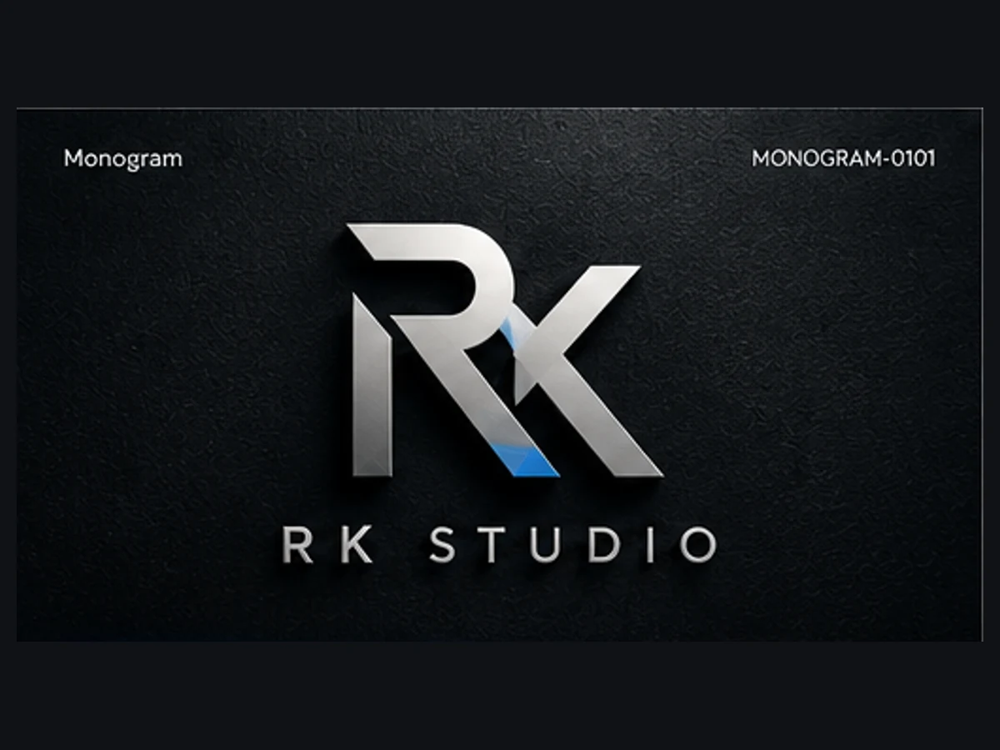
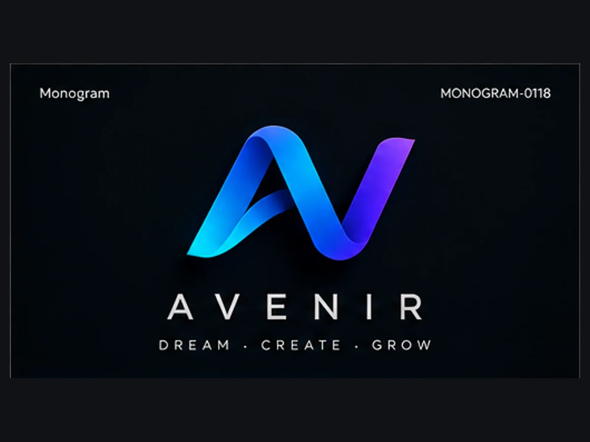
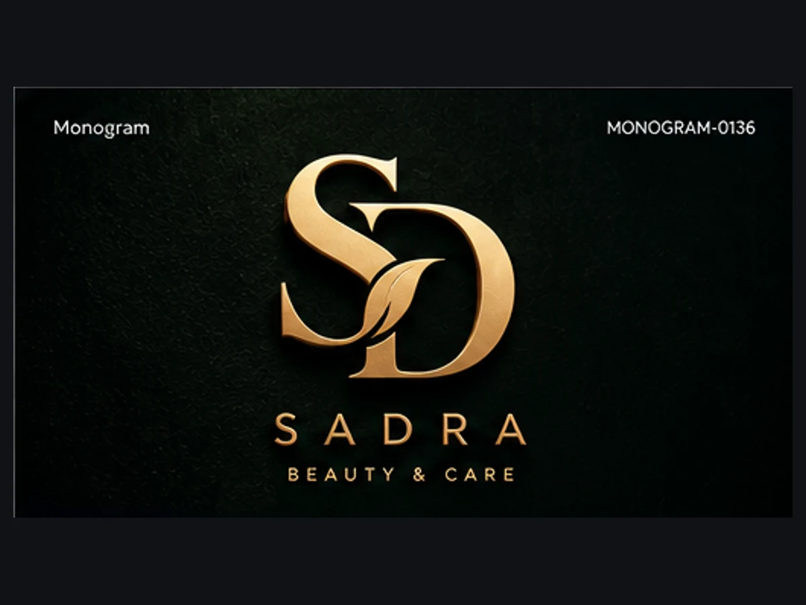

Monogram Logo Prompts
A monogram turns the initials of a name into one compact mark. This page explains the monogram direction and what to consider before you generate a prompt for it.
About the Monogram style
Monograms work by fusing two or three letters so they share strokes, overlap or interlock into a single silhouette. The aim is a form that reads as one unit while the letters stay legible. Strong monograms usually rest on a clear construction idea, such as a shared vertical stroke, a mirrored pair, or one letter nested inside another.
Because the result is small and self-contained, a monogram is also a practical way to give a long name a short visual form.
Brands it can suit
Personal brands and studios named after people, law and consulting firms, fashion and hospitality labels, and any identity that needs a compact mark for stamps, favicons and packaging seals.
Design directions in the Monogram library
Six of the design ideas that Monogram prompts can start from. Each Monogram prompt in the library pairs one idea like these with its own composition, typography and color logic.
- Two letters share one vertical stem that acts as the spine of both.
- One letter is carved out of the solid silhouette of the other as negative space.
- The letters stack, and the lower letter's apex becomes the upper letter's baseline.
- Two solid letters overlap, and the overlap area forms a third reading shape (flat color, no transparency).
- The first letter's counter houses the second letter at reduced scale, locked to the counter's geometry.
- Both letters are reduced to essential strokes on a shared baseline, with one stroke deliberately extended.
Example Monogram prompt
An excerpt of a real prompt from the library. Open the full Monogram prompt to read every section and customize it with your brand name.
AI-generated Monogram examples
These are AI-generated visual demonstrations connected to real prompts in the Monogram library. They are concept examples, not client work or finished brand identities.



Practical design considerations
- Check that the initials still read in the right order at small sizes.
- Watch for letter pairs that collide into an unintended shape.
- Test the mark in one color on a plain background before adding detail.
- Decide early whether it will stand alone or sit beside the full name.
Use it in Logo Studio
Enter your brand name and generate a structured Monogram prompt, or browse the Monogram prompts to compare directions, open a prompt's details and save favorites on your device.